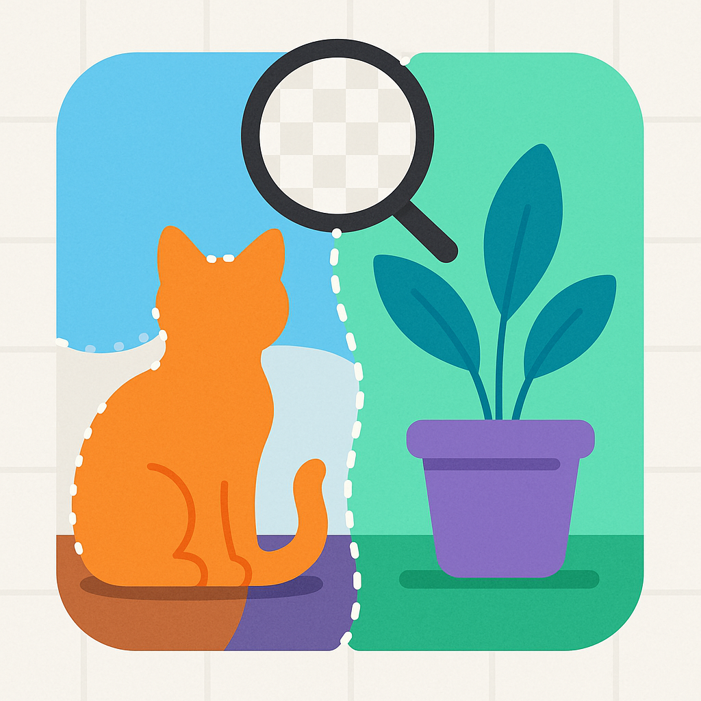
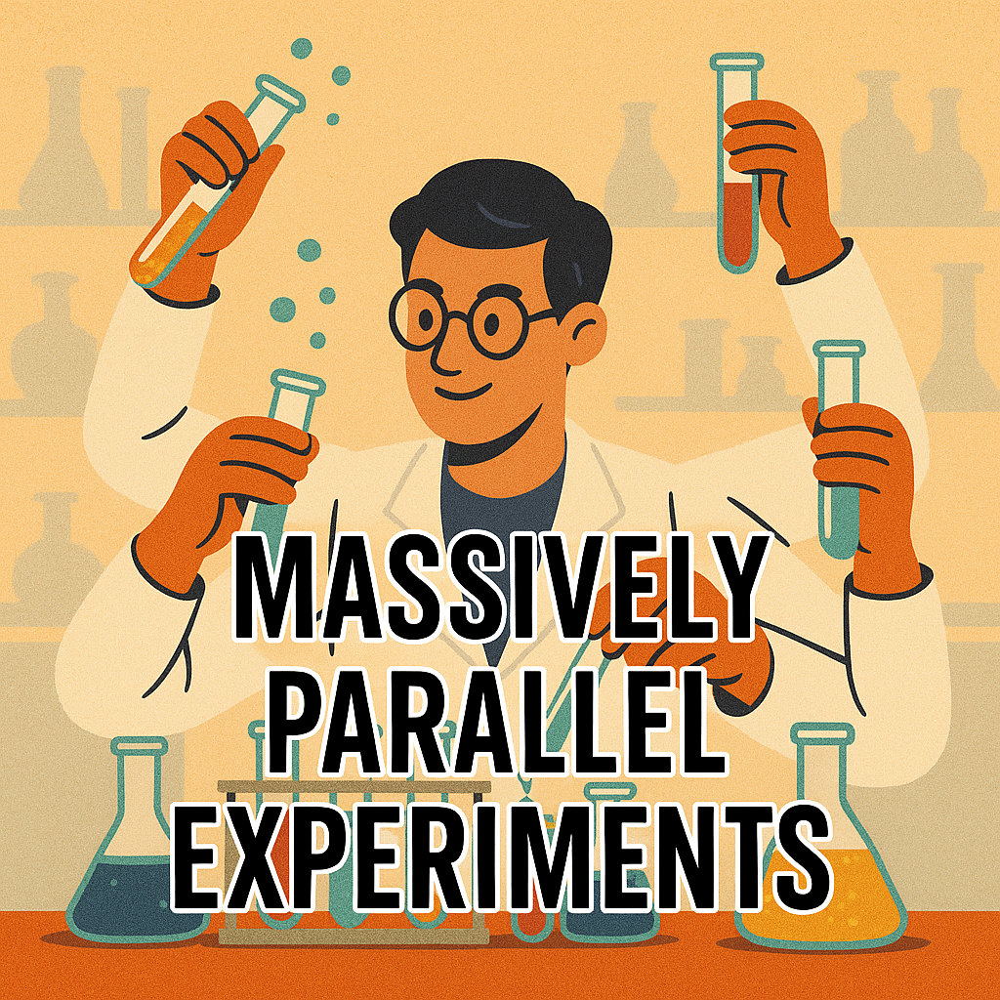
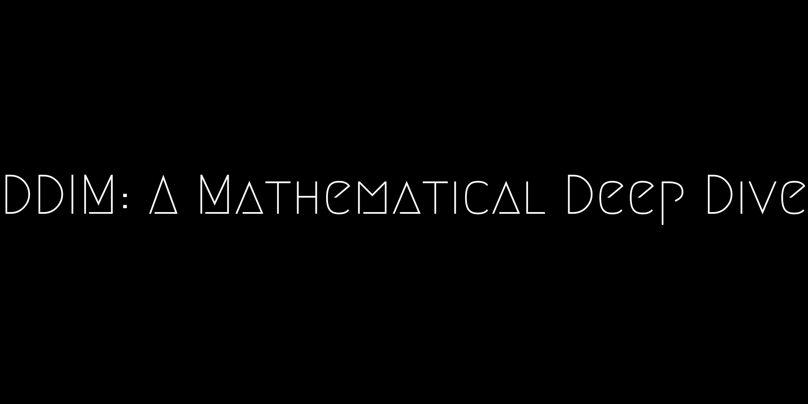
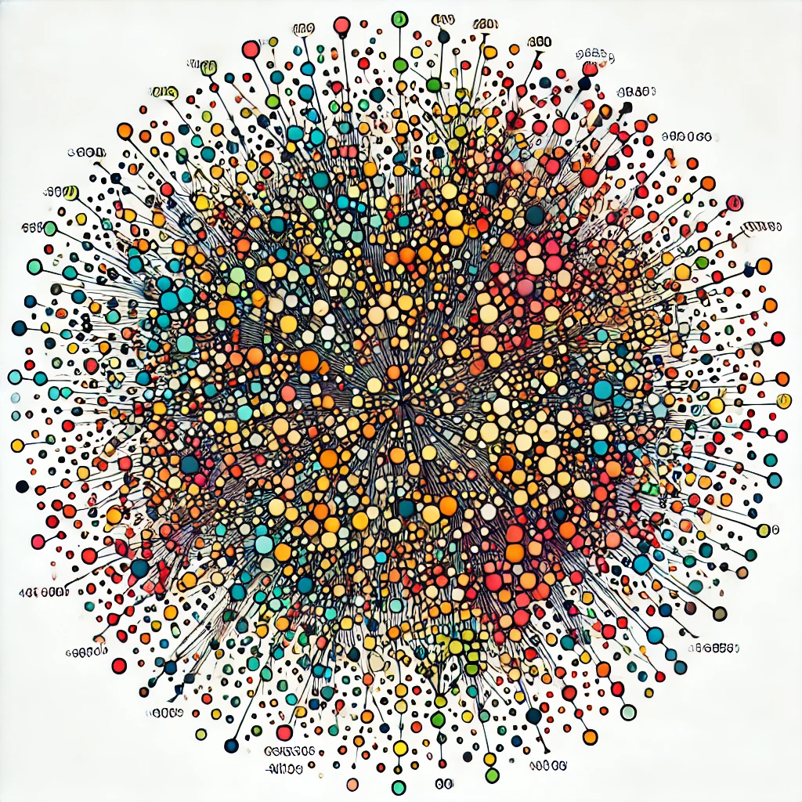
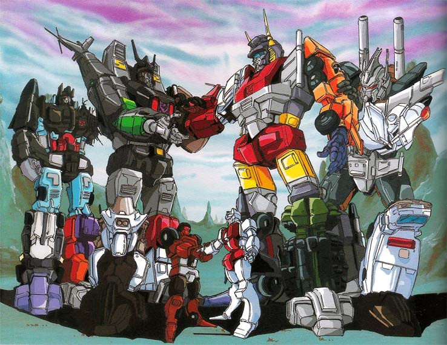
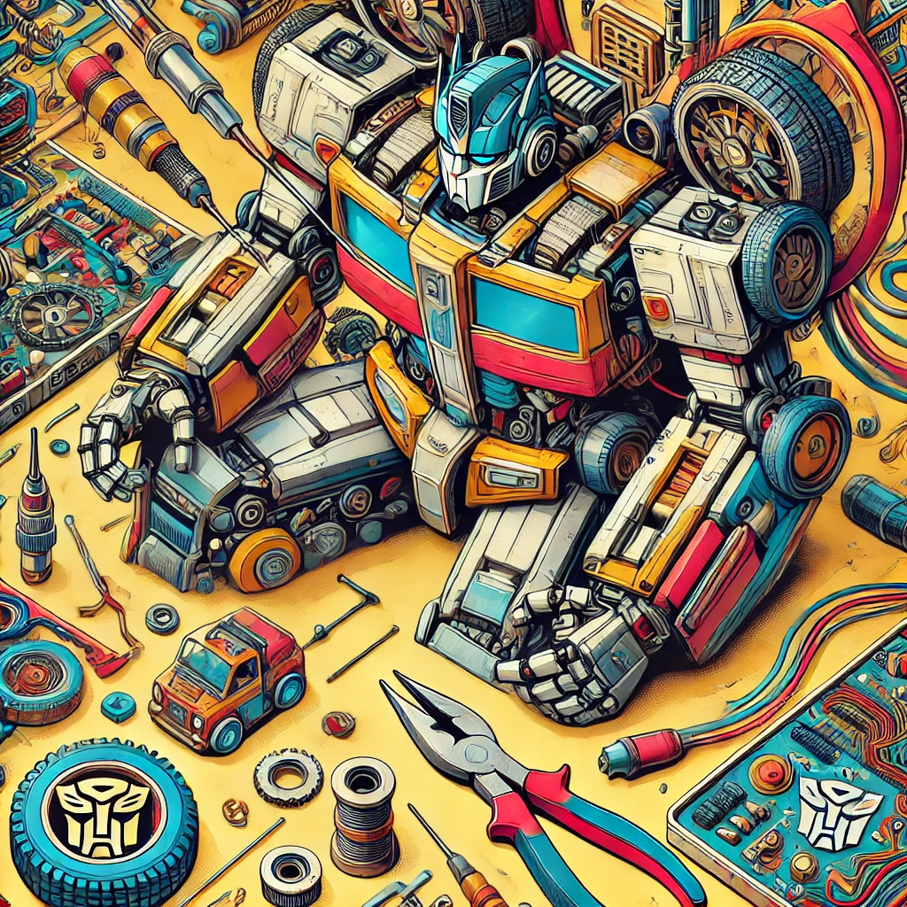
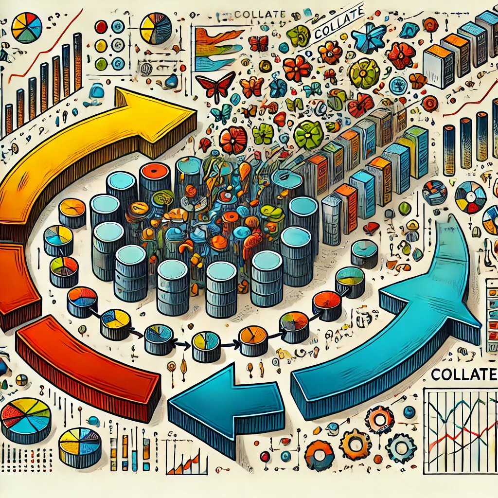
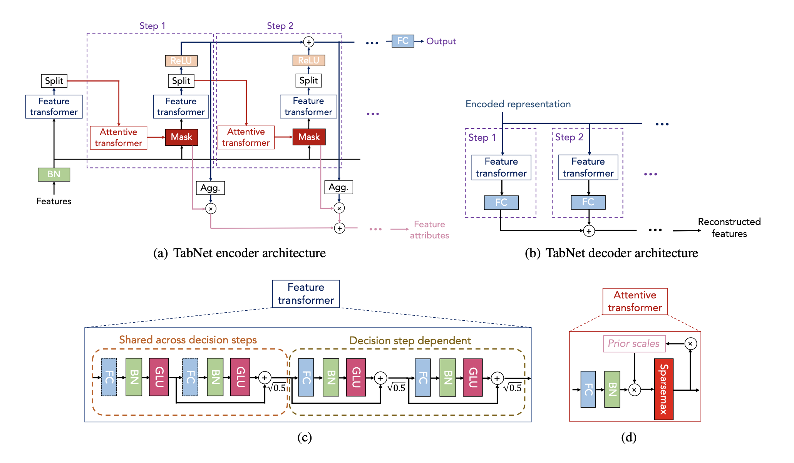
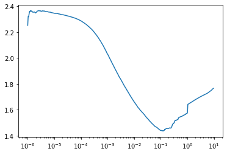
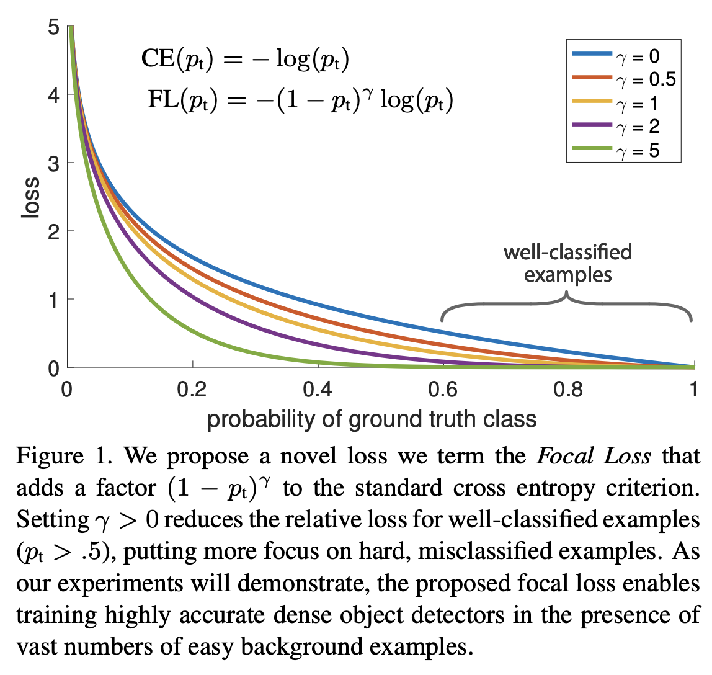

Implementing DINO self-supervised learning for Vision Transformers in PyTorch to extract image embeddings without labeled data or negative samples
Training a multilingual version of OpenAI’s CLIP model using HuggingFace and PyTorch Lightning on Google Colab
Notes + results from training a CLIP-style JEPA using Qwen3 (text) + MobileNetV4 (vision) with CyCLIP + SigLIP losses

A practical guide to image segmentation using UNet, covering data augmentation strategies and loss functions for training segmentation models in PyTorch

This guide dives into setting up large-scale machine learning experiments with a clean code structure, local testing, and efficient parallelization using tools like Typer, Pydantic, and Argo Workflows. Learn how to move beyond notebooks, structure ML projects for scalability, and log results effectively to accelerate model development.
Optimization tricks used for speeding up transformer inference
A deep dive into how transformer models calculate loss, from first principles to the HuggingFace implementation
Tutorial on finetuning LLMs via HF transformers library with wandb logging
This study finds NuExtract performs best for structured outputs, with KV caching improving speed and accuracy for larger models despite some hallucinations.
Building a vision-language model from scratch by combining small language models with lightweight vision encoders to generate image captions
MLOps: Leveraging ArgoWF and Buildkite to train models
Using KV caching and logit ratios to speed up and control LLM/ VLM outputs.

A mathematical deep dive in excruciating detail into the DDIM model
Why voting YES in this referendum is the right thing to do.
Building an image captioning model from scratch using ConvNext and Flan-T5 with cross-attention projection layers in PyTorch
An annotated implementation of Denoising Diffusion Probabilistic Models (DDPM) with step-by-step code for training on MNIST in PyTorch
Fine-tuning Google’s T5 model for grammar correction as a sequence-to-sequence task using HuggingFace Transformers
Fine-tuning GPT-2 for grammar correction as a sequence-to-sequence task using HuggingFace Transformers
A failed attempt at model compression using student teacher learning
A practical guide to writing unit tests for machine learning pipelines in Python using pytest
Implementing Approximate Nearest Neighbours Oh Yeah (ANNOY)

Implementing K-Means clustering with cosine distance in PyTorch for efficient similarity-based grouping of high-dimensional vectors
How prefetch_factor did not help in streaming data
Using Encoder Decoder models in HF to combine vision and text

Timing comparison of tokenizer as collate function and after batching
How to perform fast zero-shot text classification using HuggingFace Sentence Transformers and cosine similarity without fine-tuning

How to split images into patches for Vision Transformers (ViT) using PyTorch unfold and einops rearrange

A practical guide to writing custom PyTorch collate functions for DataLoader to handle variable-length sequences and complex batching

Creating TabNet from Scratch in Tensorflow 2.0

Implementing a learning rate finder in TensorFlow using custom Keras callbacks to find the optimal learning rate for training

Extending focal loss to multi-class classification problems to handle class imbalance in deep learning models